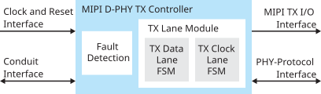
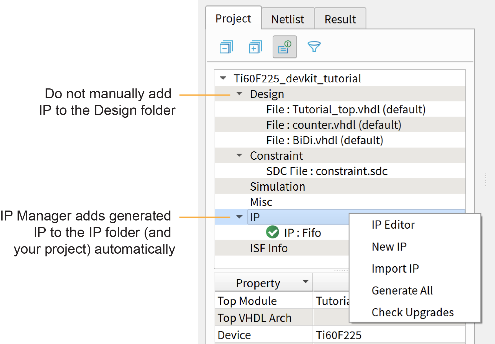

MIPI D-PHY TX Controller Core User Guide
The MIPI D-PHY is a scalable physical layer for interfacing various components such as cameras and displays to host devices. The MIPI D-PHY TX Controller core allows you to control and configure the MIPI D-PHY TX interface. You use the MIPI D-PHY TX Controller core with the Titanium HSIO pins configured as MIPI TX lanes to build a custom MIPI interface.
Use the IP Manager to select IP, customize it, and generate files. The MIPI D-PHY TX Controller core has an interactive wizard to help you set parameters. The wizard also has options to create a testbench and/or example design targeting an Efinix® development board.
This help gives you an overview of the MIPI D-PHY TX Controller core and how to configure it with the IP Manager. For detailed information, refer to MIPI D-PHY TX Controller User Guide in the Support Center.
Features
- 1, 2, 4, or 8 configurable data lanes
- Unidirectional (CSI) and bidirectional (DSI) data lane
- High-speed (HS) mode for data communication and low-power (LP) mode for data communication
- 100 MHz core clock frequency
- HS byte clock frequency from 10 MHz up to 187 MHz (from 80 Mbps up to 1,500 Mbps data rate)1
- Continuous HS byte clock and discontinuous HS byte clock
- Supports 8 bits HS data width
- Supports D-PHY-only, D-PHY with CSI, or D-PHY with DSI
- Supports PHY protocol interface (PPI)
- Supports end-of-transmission error, start-of-transmission sync error, control error, and LP escape error
Functional Description
The MIPI D-PHY TX Controller consists of a fault detection block, HS data de-skew calibration block, data lane FSM block, and clock lane FSM block.

IP Manager
The Efinity® IP Manager is an interactive wizard that helps you customize and generate Efinix® IP cores. The IP Manager performs validation checks on the parameters you set to ensure that your selections are valid. When you generate the IP core, you can optionally generate an example design targeting an Efinix development board and/or a testbench. This wizard is helpful in situations in which you use several IP cores, multiple instances of an IP core with different parameters, or the same IP core for different projects.
The IP Manager is included with the Efinity software v2020.2 and higher.
- IP Catalog—Provides a catalog of IP cores you can select. Open the IP Catalog using the toolbar button or using .
- IP Configuration—Wizard to customize IP core parameters, select IP core deliverables, review the IP core settings, and generate the custom variation.
- IP Editor—Helps you manage IP, add IP, and import IP into your project.
Generating a Core with the IP Manager
- Open the IP Catalog.
- Choose an IP core and click Next. The IP Configuration wizard opens.
- Enter the module name in the Module Name box.Note: You cannot generate the core without a module name.
- Customize the IP core using the options shown in the wizard. For detailed information on the options, refer to the IP core's user guide or on-line help.
- (Optional) In the Deliverables tab, specify whether to generate an IP core example design targeting an Efinix® development board and/or testbench. For SoCs, you can also optionally generate embedded software example code. These options are turned on by default.
- (Optional) In the Summary tab, review your selections.
- Click Generate to generate the IP core and other selected deliverables.
- In the Review configuration generation dialog box, click
Generate. The Console in the
Summary tab shows the generation status.Note: You can disable the Review configuration generation dialog box by turning off the Show Confirmation Box option in the wizard.
- When generation finishes, the wizard displays the Generation Success dialog box. Click OK to close the wizard.
The wizard adds the IP to your project and displays it under IP in the Project pane.
Generated Files
- <module name>_define.vh—Contains the customized parameters.
- <module name>_tmpl.v—Verilog HDL instantiation template.
- <module name>_tmpl.vhd—VHDL instantiation template.
- <module name>.v—IP source code.
- settings.json—Configuration file.
- <kit name>_devkit—Has generated RTL, example design, and Efinity® project targeting a specific development board.
Instantiating the IP
- <module name>.v_tmpl.sv is the Verilog HDL module.
- <module name>.v_tmpl.vhd is the VHDL component declaration and instantiation template.

Customizing the MIPI D-PHY TX Controller
You can choose to generate the testbench when generating the core in the IP Manager Configuration window. To generate testbench, the Testbench Deliverables Option signals must be enabled.
provides a simulation script for you to run the testbench
quickly using the Modelsim software. To run the Modelsim testbench script, run
vsim -do modelsim.do in a terminal application. You must have
Modelsim installed on your computer to use this script.
| Name | Option | Description |
|---|---|---|
| tLPX (ns) | Values according to MIPI D-PHY specifications. | Soft D-PHY timing parameter in ns. Default: 50 |
| HS BYTECLK (MHz) | 10 – 187 | MIPI parallel clock frequency in MHz to support data rate of 80
Mbps to 1,500 Mbps. Default: 100 |
| Data Lane | 1, 2, 4, 8 | Number of data lanes. Default: 4 |
| DPHY Clock Mode | Continuous, Discontinuous | Enables discontinuous or continuous HS clock. Default:
continuous |
| tLP_EXIT (ns) | Values according to MIPI D-PHY specifications. | Soft D-PHY timing parameter in ns. Default: 100 |
| tWAKEUP (ns) | Values according to MIPI D-PHY specifications. | Soft D-PHY timing parameter in ns. Default:
1000 |
| tHS_EXIT (ns) | Values according to MIPI D-PHY specifications. | Soft D-PHY timing parameter in ns. Default: 100 |
| tHS_ZERO (ns) | Values according to MIPI D-PHY specifications. | Soft D-PHY timing parameter in ns. Default: 105 |
| tHS_TRAIL (ns) | Values according to MIPI D-PHY specifications. | Soft D-PHY timing parameter in ns before adding 4UI. Actual
THS TRAIL = tHS_TRAIL_NS + 4UI or 8UI (whichever
bigger). Default: 60 |
| tCLK_ZERO (ns) | Values according to MIPI D-PHY specifications. | Soft D-PHY timing parameter in ns. Default: 262 |
| tCLK_TRAIL (ns) | Values according to MIPI D-PHY specifications. | Soft D-PHY timing parameter in ns. Default: 60 |
| tCLK_POST (ns) | Values according to MIPI D-PHY specifications. | Soft D-PHY timing parameter in ns before adding 52 UI
. Default: 60 |
| tCLK_PREPARE (ns) | Values according to MIPI D-PHY specifications. | Soft D-PHY timing parameter in ns. Default: 38 |
| tCLK_PRE (ns) | Values according to MIPI D-PHY specifications. | Soft D-PHY timing parameter in ns . Default: 10 |
| Bus Turnaround Timeout (ns) | – | Bus turnaround timeout parameter in ns. If the D-PHY RX does not
respond within this period, D-PHY TX ends the turnaround
request. Applicable to bidirectional mode
only. Default: 100000 |
| tD_TERM_EN (ns) | Values according to MIPI D-PHY specifications. | Soft D-PHY timing parameter in ns. Applicable to
bidirectional mode only. Default: 35 |
| tHS_PREPARE_ZERO (ns) | Values according to MIPI D-PHY specifications. | Soft D-PHY timing parameter in ns. Applicable to
bidirectional mode only. Default: 145 |
| Enable Bidir Mode | 0 or 1 | Enable bidirectional data lane. Applicable to bidirectional
mode only. Default: 1 |
| CLOCK_FREQ_MHZ | 40 - 100 | Core clock frequency in MHz. Default: 100 |
| tHS_PREPARE (ns) | Values according to MIPI D-PHY specifications. | Soft D-PHY timing parameter in ns. Default:
40 |